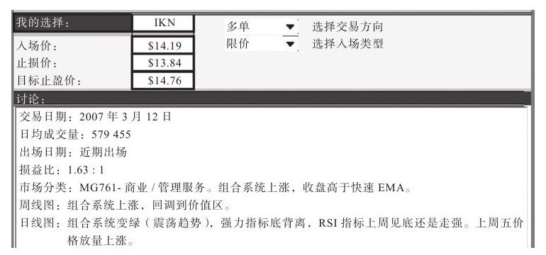
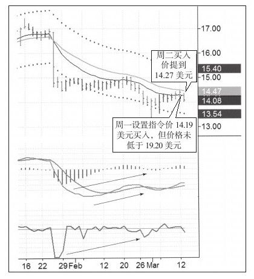
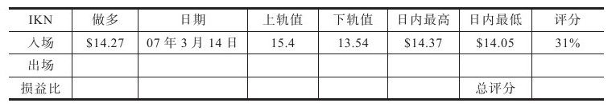
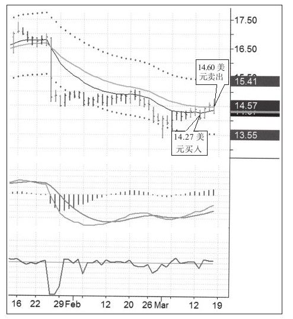
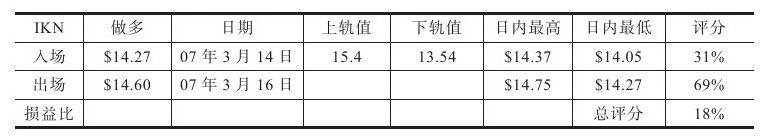

我最喜欢的短期交易的信息来源是Spike集团，其会员每周都能收到很多短期交易机会，我通常选择其中的一两个以备下周交易。这个周末我选择了IKN，是由吉姆·劳斯科布尔推荐的，从Spike网站上可以看到（见图6-2）。这次做多交易的每股风险值是25美分，潜在盈利是57美分（见图6-3和图6-4）。





因为有幸在突破上轨的第三天才卖出，所以这次交易的出场评分是69%，一个不错的成绩；总交易评分中等，18%，因为总评分在20%以上才能获得B评级，18%可以算作B-。这次交易在当周交易推荐中获铜牌，在当时非常糟糕的市况下获得第三名非常不易。我因自主交易导致利润低于预期。
因为这次交易平淡无奇，所以我特意选择它作为案例。交易生活并没有多少乐趣可言，令人兴奋的交易少之又少。发现一个合理的交易信号后机械地入场，即便市场不如预期的好但出场价格是清晰的，最终获得一些利润入账。这就是大多数以交易为生的人的交易生活。